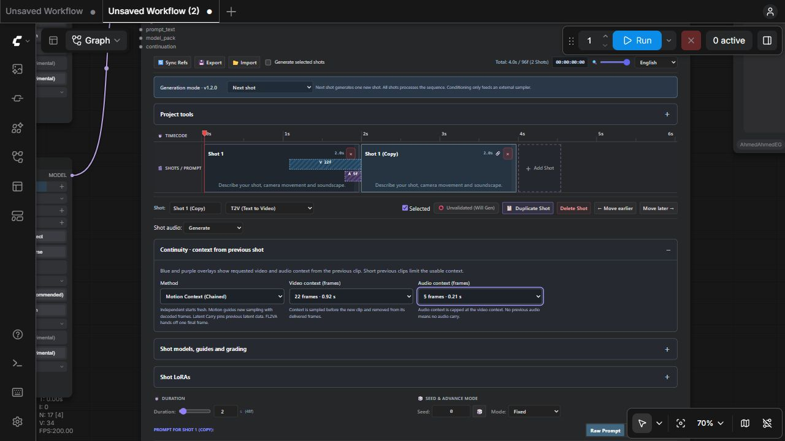
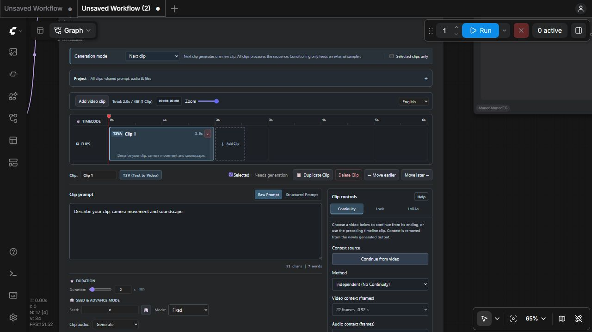
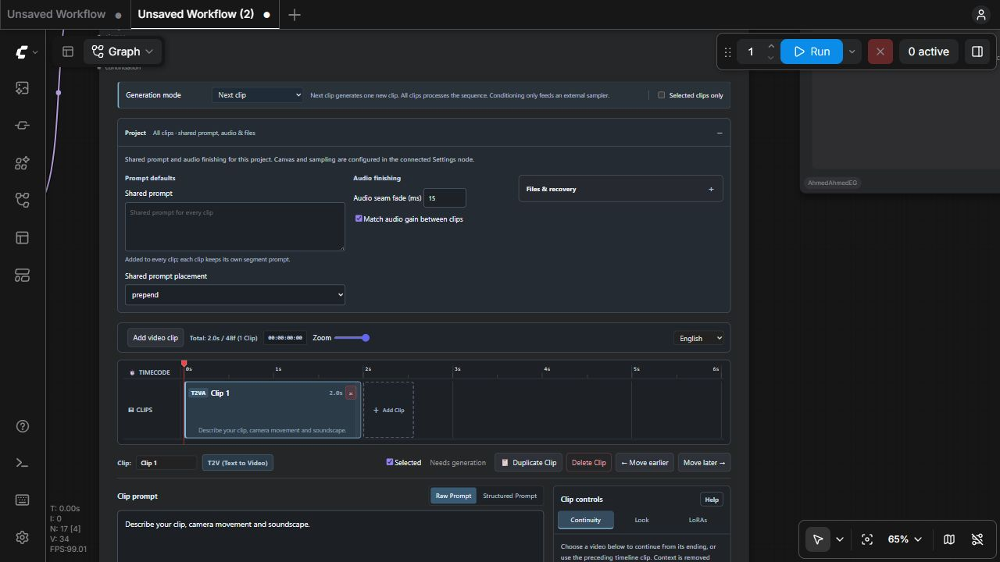
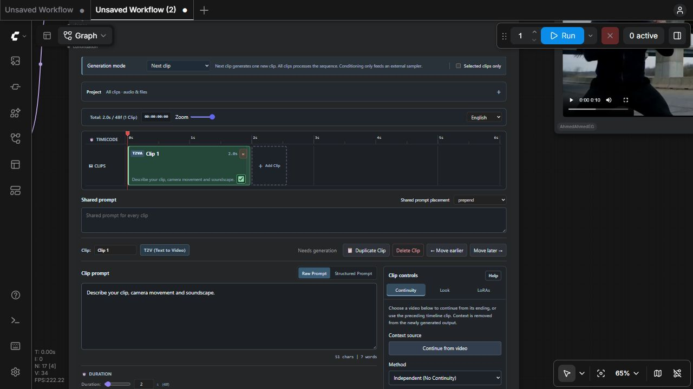
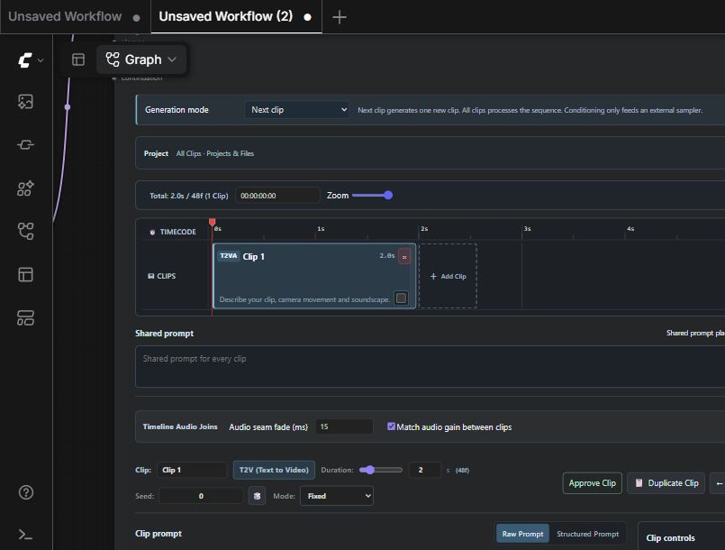

Generation Mode is the standard ComfyUI dropdown above the Master editor, like other node options. It has no custom panel. The selected value is saved with the workflow and named server project. Older workflows migrate their timeline setting into this dropdown. The native input takes precedence during API execution; timeline mode is retained for legacy calls.
This is a scheduling decision for the Master, not a video model and not a playback setting. Generation mode is the prominent dropdown at the top of the Master. When you press ComfyUI Run, the Master reads its timeline state, walks the ordered clips, resolves references, builds conditioning, then either samples a new take or restores usable cached data. The separate Smart Preview reads completed take caches afterwards.
| Choice | Execution | Choose it for |
|---|---|---|
| Next clip | Internally selects execution_mode=All-in-One Generation and run_mode=clip_by_clip. The Master can restore approved predecessors, but stops after sampling one new clip. A usable approved cache does not consume the new-clip allowance. | Build a sequence incrementally. Generate, inspect, approve a take, then run again for its successor. |
| All clips | Selects run_mode=full_batch. The Master processes the ordered timeline in one call; approved saved takes are restored without resampling, even when settings change, while eligible unapproved clips are sampled. | A complete batch after you have checked prompts, references and continuity. This can take much longer than one clip. |
| Conditioning only | Selects execution_mode=Conditioning Guide Output. It calls the native H3 conditioning builder but bypasses internal diffusion sampling. The useful outputs are positive, latent and resolved_prompt; the returned latent is a prepared sampling input, not a completed take. | Advanced graphs that supply an external sampler. Do not select this to watch a finished video in Smart Preview. |
Worked example: you have clips A, B and C. In Next clip, a first run generates A. Inspect it and validate it. A second run can restore A and generate B; a third can restore A and B and generate C. If A remains unvalidated, another run may sample A again. Next clip means one newly sampled clip per execution, not “automatically advance the playhead.” Approved takes remain accepted in both modes. Unapprove A to generate a replacement; editing its clip controls may clear approval. Unapproved skipped clips still need matching caches.
The Master’s Selected clips only checkbox adds a separate eligibility restriction. An unselected clip must have a usable matching cache or a supported original-source range; it is not silently replaced with an empty placeholder. “All clips” does not override that explicit selection restriction. The player’s Latest clip/Full video choice affects downloads, not this scheduling.
Independent clips each begin without the preceding clip’s generated context. A chained clip receives information from its predecessor to encourage the same motion, subject and sound to continue. This is conditioning and sampling state, not merely a crossfade between finished MP4 files. A context prefix can be sampled or pinned inside the new latent, then removed from the delivered sequence so the viewer does not see the same time twice.
| Choice | Mechanism in this pack | Tradeoff |
|---|---|---|
| Independent | No previous-clip context is injected. Per-clip keyframes and references still apply. | Use for cuts, different scenes and the first test. Identity can change unless you provide references. |
| Motion Context | The Master takes an aligned range of decoded tail frames and corresponding audio, places them at the beginning as H3 guides and adds room for that prefix in the requested generation length. | Encourages continuation of motion and appearance. More context increases conditioning work and can constrain a deliberate change of action. |
| Latent Carry | Uses apply_latent_continue to carry audiovisual latent context and noise masks into the next sample. It preserves native temporal phase, can trim the previous tail at the seam, and pins/remasks the prefix during sampling. | Useful for stronger continuity. It depends on a compatible previous AV latent and correct seam phase; it is more restrictive than using unrelated image references. |
| FL2VA Tail Handoff | The general continuity path supplies the previous last frame as an opening keyframe. It does not enter the multi-frame Motion Context/Latent Carry prefix branch. | A simpler boundary handoff with less motion history. An explicit opening frame or task-specific references may override the automatically selected image. |
Continuity applies only when the current clip permits chaining and a usable predecessor exists. Image Inpaint and explicit video-source editing follow their own rules. I2VA with an explicit opening image uses that image; L2VA is a closing-frame task. REF2VA can receive previous visual/audio material when local references are absent, while multi-frame context is handled separately. See the Master’s mode and reference rules rather than assuming every task uses the same seam mechanism.
context_length is measured in decoded video frames at 24 fps. It is unrelated to an LLM token limit and is not a number of diffusion steps. The choices follow the H3 temporal grid: 5, 22, 39 and 56. Their durations are approximately 0.208, 0.917, 1.625 and 2.333 seconds. The Master limits the requested context to the available tail and aligns it down; a short predecessor cannot supply 56 real frames.
For a five-second continuation with 22 context frames, the model works on an aligned sequence containing both the visible new material and its context prefix. The delivered frames have the prefix removed during assembly. Consequently, timeline duration, native aligned generation length and final delivered length are related but not interchangeable. A longer context consumes more computation and can preserve unwanted previous motion. Begin with 22 for an ordinary continuation, 5 for a lighter handoff, and Independent for a hard scene cut.
Click a clip, then use its open Continuity section. The method is saved as continuity_mode, video frames as context_length, and audio frames as audio_context_length. These are authoring fields in the Master's timeline JSON. They override the legacy configuration fallback, so one clip can be independent while its successor uses motion guidance or latent carry.
Video context choices are 5, 22, 39 or 56 frames at 24 fps. Audio can be Off or use those same frame-time lengths, capped at the usable video context. Motion Context passes decoded tail media as native H3 guides; Latent Carry calls the continuation adapter with separate audio pin and audio-context settings. Turning audio off stops inherited audio guidance/pinning; it does not mute newly generated clip audio. Latent Carry exposes seam redraw strength from 0 to 1. FL2VA Tail Handoff borrows a single visual anchor and no audio prefix.
Blue V and purple A overlays extend left from the new clip into its predecessor and label the borrowed frame counts. They visualize context, not an extra output clip or a crossfade that lengthens the delivered sequence. The initial display estimates availability from the authored predecessor duration; H3 grid rounding and decoded media can change the actual count. Source ranges, locked clips and inpainting do not borrow a generated context prefix. The first clip requires an explicit continuation checkpoint if it needs previous context.
Each completed clip now retains up to 56 decoded tail frames and the corresponding audio; the next clip chooses its context length. This prevents the previous clip's own seam choice from silently limiting its successor. Effective per-clip video/audio context settings participate in cache fingerprints. Change a method or context length to invalidate the affected take and inspect chained successors before revalidating.

Each feature has one configuration owner. Director Settings owns canvas dimensions, canvas policy and sampling. Reference Pack owns media and RefMod files and their names; the Master only assigns those assets to clips. Prompt Forge and Review / Apply Prompt Draft own drafting and review. Smart Preview owns playback scope. The Master owns the timeline, clip prompts, continuity and project state. Its editing workspace keeps the prompt, duration, seed and clip audio on the left. The right-hand tool panel has Continuity, Look, LoRAs and Project sections; Generation mode stays above the timeline.
Select a clip in the timeline. Its name, task mode, approval/reuse status and edit actions appear directly below the timeline. Clip prompt is the primary writing surface on the left. Duration, seed and seed-advance behavior have dedicated rows in the clip header; clip audio stays in the writing area, independently of the selected tool tab. Raw and Structured are alternative editors for the same clip prompt. Structured mode exposes its subject, action and sound fields inside the writing area.
| Tab | Controls it owns | Scope |
|---|---|---|
| Continuity | Continuity method, video/audio context lengths and applicable seam redraw strength. The source is always the preceding timeline clip. | The selected generated clip. Source-edit/inpaint clips disable this tab. |
| Look | Named model override, interior reference anchors and exposure/contrast/saturation. | The selected clip. |
| LoRAs | Compatible installed LoRA selection, strength and enable state. | The selected clip. |
Choose a tab by clicking its label, or focus a tab and use Left/Right arrows, Home or End. A tab change preserves authored values and moves no prompt/duration/seed controls. Only the tool body scrolls when it contains many fields. Help toggles the longer field explanations; it does not hide configuration controls. Project configuration has one entry point: the Project section above the timeline. Saved workflow data remains unchanged by the selected tab or Help visibility: these are temporary interface preferences.
Approve Clip marks its current saved take as accepted. Unapprove Clip makes it eligible again. The green timeline checkbox selects a clip for the optional Selected Clips Only filter; it does not approve the take. In Next Clip and All Clips, approval preserves a complete saved take even when global settings change. Missing approved results produce an error rather than silently regenerating that clip. The actual execution scheduling comes from Generation mode and the selected-clip restriction, not the sidebar tab.
The Master is an audiovisual generation controller. Its editor stores a JSON timeline, but actual model execution happens on the ComfyUI server. One execution resolves the timeline, chooses the model family for each task, resolves each clip's selected references and seed, builds native H3 conditioning, optionally applies Semantic Bridge, samples with the selected schedule, optionally refines, decodes, performs applicable grading/face work and saves the take. It then assembles the processed frames/audio and reports project state.
The editor does not contain model weights. Model loaders produce MODEL, CLIP and VAE objects; configuration nodes produce dictionaries describing requested work. The Master consumes those objects. It is not an output sink: connect an output node, such as Smart Preview or an exporter, so ComfyUI schedules its execution. Connecting a preview does not turn a prepared latent into a movie when Generation mode is Conditioning only.
Timeline + Settings + Reference Pack + model family
→ reference selection and task validation
→ prompt compilation and native conditioning
→ optional semantic rewrite / continuity masks
→ sampling or approved-cache restoration
→ optional latent refinement → VAE decode → grading / FaceRefine
→ cached take + project state → Smart Preview or final exporter| Editor task | Family | Role of selected media |
|---|---|---|
| T2V / T2VA | FL2VA | Text-only generation. Do not assign image/video/audio references to a text-only clip. |
| I2V / I2VA | FL2VA | An assigned image defines the opening frame. The prompt describes what happens after that frame. |
| FL2V / FL2VA | FL2VA | Two images define first and last frames in selection order. With continuity and one local image, that image can act as the ending keyframe. |
| L2VA | FL2VA | One selected image defines the ending frame. It is not the same constraint as I2V. |
| REF2VA | REF2VA | Selected pictures, videos, audio and supported RefMods guide subjects, appearance, movement or sound through reference conditioning. |
| V2V / RV2V | REF2VA | A real selected source-video range is edited. Source coordinates define the visible edit interval; they are not a request to append a generic continuation prefix. |
| Image Inpaint | FL2VA | Exactly one image; a single-image editing task. It is not a multi-second video mode. |
Use fl2va_model and ref2va_model to keep both families connected. They are lazy inputs, so an unused family need not be executed merely because its cable exists. The generic model socket is no longer offered; its old connections are migrated to empty family sockets. A named per-clip model override in model_pack can replace the family choice. Connect a compatible H3 model: the socket type MODEL alone does not prove that a completely different architecture is suitable.
Reference Pack is the authoring source for new references. Connecting four images makes four images available; it does not assign all four to every clip. Select the current clip, then select the pool items it should use. This avoids accidental cross-clip contamination. Friendly names identify assets in the editor; stable IDs identify graph slots; native prompt tokens identify their ordered positions in this clip's conditioning.
If Alice is pool image_4 and Background is pool image_1, but you assign Alice first and Background second, the visible token mapping must be read for that clip. <Picture 1> means its first assigned picture, not always global image_1. Renaming Alice does not change the native token grammar. Reordering assignments can change token numbering, so review the prompt after removing or rearranging media. Buttons only appear for real assigned references. The editor may preserve already typed text; it does not invent a real Video 1 because that string occurs in a prompt.
The pool can be chained to hold more assets than one node's slots. The per-clip validator still imposes reference counts and durations. REF2VA checks up to 9 images, 3 videos, 3 audios and 12 total reference items, with RefMods counted in the total; audio-only reference use requires visual material. Inspect the task's validation message rather than assuming a large pool removes model limits. Keyframe tasks use stricter image-only rules.
Raw Prompt is an ordinary clip description. Explain action, camera movement, scene and sound, then insert only tokens corresponding to assigned media. Structured Prompt exposes H3 sections: subject_definitions, summary, retention_analysis, detailed_description, overall_soundscape and non_diegetic_music. These are compiled into labeled text. The format does not load references automatically and is not a guarantee of stronger adherence.
The per-clip Raw/Structured choice controls compilation; there is no competing global prompt-format widget. External prompt_text and group sockets have been removed from new Master nodes to keep clip authoring in one place. Connected legacy sockets are preserved and labeled Legacy when loading older workflows; pre-cleanup API calls remain compatible. Review the resolved_prompt output to see what was actually sent to the final processed clip, including task scaffolding and RefMod alias translation. ComfyUI's hidden PROMPT input is the execution graph, not user prompt text.
For the target video, <Picture 1> defines Alice's appearance.
Alice turns toward the window, then walks out of frame.
The camera follows slowly. Soft footsteps and distant traffic.Start with one subject and one clear action. A structured prompt with contradictory retention and action requests can still confuse generation. Do not paste Video/Audio tokens when no matching media is assigned, and do not mistake the token's display label for a filesystem path.
Click a clip to inspect it. Drag its body to reorder the complete clip and associated reference lanes; drag the right edge to change duration. Move earlier/later buttons provide an explicit alternative. This is an ordered generation timeline, not a multitrack compositor with arbitrary overlapping video clips. Delete removes the authored clip from this timeline; it does not mean that all server-side take files are permanently erased.
Image, video and audio rows appear when relevant references exist. An image cover is a selected reference, not proof that a take has generated. Click reference thumbnails for a larger inspection. Source-video tasks select an existing pool video and edit a range; a locked source clip passes through the real source range instead of sampling it. Keep source sound, Generate sound and Mute have different effects. They do not select the preview scope.
Duration is requested visible time. Sampling lengths are snapped to H3's temporal grid. Changing duration, order or a chained predecessor can invalidate dependent takes. The timeline ruler uses DOM text so graph zoom does not stretch a low-resolution bitmap; its internal zoom is independent of ComfyUI canvas zoom.
In Next Clip and All Clips, validation accepts the current saved take: complete readable cached frames, audio and latent data are reused even when the current fingerprint differs. Next Clip samples the first unapproved eligible clip and then stops. All Clips samples every eligible unapproved clip. Neither mode regenerates an approved clip. If its frames, audio or latent are missing, execution stops with an error: restore the saved results or explicitly unapprove the clip. A fingerprint includes effective prompt, dimensions, duration, seed, sampling settings, media and applicable enhancement/model state. Chained clips also include upstream dependency information. To replace an accepted take in either mode, explicitly unapprove it. Editing a clip prompt, duration, seed or continuity can also clear approval; changing global sampling settings alone does not replace accepted takes.
Each timeline has a project_id; each clip has an id; generated takes have revision/generation identities. Reusing a project ID deliberately accesses that project's server cache. Lightweight workflow JSON carries authoring settings and graph wiring, not all generated tensors. A portable media/project package and a server checkpoint address different needs. Export/import/reset are authoring operations; inspect what an archive contains before treating it as a complete installation backup.
Next clip restores acceptable predecessors and stops after one new sample. All clips processes the eligible sequence. Selected clips only adds selection filtering. A previous approved clip may still be needed as continuity context. Errors for missing caches or missing source ranges are meaningful: the pack does not manufacture replacement frames just to keep an export going.
images is the assembled IMAGE frame batch for the processed output; audio is its synchronized waveform. Assembly removes applicable continuity prefixes and standardizes mixed frame dimensions to the first output canvas. fps and frame_count describe the delivered output. The socket named video contains VHS_VIDEOINFO metadata, not a disk VIDEO or MP4 file: use images/audio/fps with Create Video or an exporter.
positive, latent and resolved_prompt describe the final processed clip, not a list of all clip states. In generation mode the latent is a sampled audiovisual latent; in Conditioning only it is the prepared latent input. status reports processing outcomes. project_state is JSON used by the separate player and cache-driven exports, containing project and clip identities rather than embedding model tensors.
The Master still assembles decoded frame batches when it executes. Latest-clip preview reduces preview encoding/network traffic; it does not eliminate all server-side decode or assembly memory. For long final projects, Project / Clip Video Export reads cached clips individually rather than requiring a new monolithic generation pass. Keep this distinction in mind when diagnosing VRAM, RAM and bandwidth separately.
The Clip models, guides and grading section selects a named model override, adds interior anchors and adjusts decoded color. Each anchor selects an existing pool reference and a time in seconds; the runtime converts its position to the native frame grid and adds the supported H3 guide. An anchor is not an extra timeline clip. Color controls change exposure, contrast and saturation on decoded frames; they do not change the first-pass noise schedule or load a different model.
Clip LoRAs supports up to eight enabled entries with a model strength. The pack resolves the installed LoRA file, hashes its content and clones/patches the active model for that clip using ComfyUI's loader; it does not patch CLIP in this clip-local path. Disabled/blank/zero-strength rows are omitted, and invalid/nonfinite strengths are rejected. A patch for one clip must not leak into siblings. A Turbo LoRA also needs its intended schedule: selecting a clip-local file is separate from the starter's explicit global model/steps toggle.
Fixed keeps the clip seed, Increment/Decrement changes it after an execution, and Randomize requests another starting seed. The serialized decimal-string representation preserves values above JavaScript's exact-integer range. Duration, Seed and Seed Mode are beside the clip name above the writing area. Duration and seam-overlap fields describe time/context; neither is a sampling-step control. Per-clip overlap/tail choices interact with the global continuity strategy, so use the Settings explanation when choosing a boundary.
Clip audio Generate uses sampled sound, Keep source audio uses the supported source sound, and Mute creates the appropriate silent delivered interval. Keeping source audio requires an actual source with audio. Project Tools also exposes audio seam fade in milliseconds and gain matching between clips. Gain matching adjusts relative loudness; seam fades reduce boundary clicks without creating missing dialogue or a soundtrack.
For V2V/RV2V, choose a real pool source video and set a finite increasing start/end interval. Split into equal ranges divides that interval into authoring clips; Split at playhead uses the source player's current time; Detect scene boundaries calls source-scene analysis and uses real cuts within the range. Remove next boundary / merge requires a contiguous next range from the same file, merges prompts/reference IDs and clears approval. These operations edit the source-range timeline, not the underlying video file.
An existing-video source passes its actual media through without sampling; its trim range can be edited and split. It is not a generated take that becomes permanently immune to all project changes. The inspector must remain usable without a removed upload/frame-picking control. Source handling is separate from Smart Preview's output scope.
The Shared prompt textbox directly below the timeline applies to every clip. Shared prompt is added to each clip’s own prompt: prepend places it before the clip text, append places it after. For example, shared “Watercolour style” plus clip “A bird takes flight” produces both instructions in the chosen order. Inspect resolved_prompt to see what actually reaches conditioning. Changing the shared prompt can invalidate cached clips.
Audio seam fade is measured in milliseconds and fades audio at clip boundaries to reduce clicks; it does not change audio continuity conditioning. Gain matching adjusts neighbouring audio levels with bounded gain; it does not change the content of generated sound. Canvas controls are exclusively in Settings. Manual uses width/height; Original follows source dimensions; Auto uses megapixels and aspect. The connected Settings configuration takes precedence over legacy timeline canvas fields. Saved UI workflows transfer old timeline canvas policy to connected Settings on import.
| Action | What happens | When to use it |
|---|---|---|
| Delete Saved Results | After confirmation, deletes generated takes/cached outputs for this project and clears approval. Input reference files remain. | Discard unusable cached renders. They cannot be recovered with the authoring-state recovery button. |
| Export with media | Downloads a portable .mmxproj archive of timeline state and available input assets, including imported/continuation videos. | Move authoring work and its input media to another server. It is not a final MP4 export or model backup. |
| Import media pack | Uploads such an archive and offers append or overwrite. Append remaps IDs and clears approval. | Restore or combine portable projects. Keep connected models/configuration appropriate to the restored project. |
| Restore Last Autosave | Restores the latest autosaved timeline for the current project ID. | Recover authoring state after interruption. It does not recover deleted cache files or recreate a missing graph. |
| New Project | Starts a fresh timeline with a new project ID. | Begin another sequence without reusing the old project’s cache identity. Export unsaved authoring work first. |
| Reset | After confirmation, resets this timeline to one default clip, retaining project identity. | Start authoring again within the same project. It does not perform a cache purge. |
The toolbar Export/Import buttons transfer lightweight timeline JSON; the archive actions include media. Final video encoding belongs to Smart Preview’s save control or a connected output/export node. There is no Master button that creates a second exporter configuration.
Add Clip → Add Existing Video creates a VIDEO clip. Select exactly one video from the connected Reference Pack Assets list. There is no upload picker. The clip passes that frame batch and its paired audio through without diffusion sampling. Put a generated clip after it to continue from its ending.
Example: add your existing movie to the timeline, then add Text To Video after it. Enter “The person turns toward the door”, choose Motion Context, and set Video Context to 0.92 s and Audio Context to 0.21 s. The source footage is retained and only the new clip is sampled. All continuity modes use the immediately preceding timeline clip. There is no separate hidden file-context picker.
T2V has no reference picker or fabricated prompt tokens. I2V, L2V, FL2V and image inpaint show image assets for their endpoint/image roles. REF2VA, V2V and RV2V expose applicable media/RefMods from the connected Reference Pack. Clip type is fixed at creation. To use another task type, create a new clip with Add Clip. The existing clip keeps its prompt, references and cached take; the new clip starts with no assigned references. Prompt insertion buttons and timeline reference rows use only existing assigned assets. Configure asset names and RefMods in Reference Pack; configure LLM drafting in Prompt Forge.
Export creates the supported authoring/project package; Import restores or appends supported authoring/media content. Append remaps IDs and clears approval to avoid colliding with existing clips/references. Autosave records authoring state after successful take processing. Graph-authored groups keep IMAGE/AUDIO objects in execution memory and rebuild them from upstream nodes each run: tensor-bearing runtime group dictionaries are intentionally excluded from autosave and project-state JSON. An autosave without its graph/media/cache is not a complete reproducible render environment.
SelfLift changes first-pass sampling resolution; Refine operates on the sampled latent; FaceRefine operates on decoded face crops; Semantic Bridge changes text-conditioning embeddings. Their sockets receive configuration packs, not finished frames. sigmas supplies an external schedule. Clip groups and connected prompt overrides are no longer offered as Master inputs; clips and prompts are authored in the timeline. model_pack carries named MODEL overrides; latent_checkpoint supplies an explicit saved take, including its latent state, from a checkpoint selector. This advanced input does not import a video into the timeline.
timeline_data and builder_state are serialized editor storage, intentionally hidden as ordinary widgets. The visible editor is their authoring interface. ComfyUI also injects hidden unique_id and PROMPT metadata. These are not missing user settings. Generation mode is the prominent labeled control at the top of the Master. Continuity method and video/audio context belong to each selected clip.
Implementation: Master executor, task validation, take cache, project serialization, editor.

Above the timeline, Generation mode controls scheduling; Selected clips only narrows which clips may be generated. The checkbox at the bottom-right of each timeline clip identifies membership in that eligible set. It starts unchecked; checking it makes the clip green. Clicking a clip to inspect it is separate from checking it for generation. Previously saved explicit selections are preserved. These controls have different jobs: marking a clip Selected does not activate the project-wide restriction, and choosing All clips does not bypass an active selection restriction.
The navigation strip contains total duration/frame/clip counts, the current playhead timecode, timeline zoom. Zoom changes only the timeline scale; it does not change clip durations, canvas resolution or frame rate. Add Clip → Import Video Clip uploads footage and inserts a locked source clip into the sequence. It differs from Context source in Continuity: context supplies the ending of a file to a newly generated clip without inserting that file into the output.
Project section is the only location for project imports and exports. Export Project uses Include Media to choose the format. Enabled produces a portable .mmxproj archive containing available source/reference files. Disabled produces .mmxproj.json containing timeline data and paths; those media paths must still resolve on the destination server. Neither format is an encoded final video; saving the rendered video belongs to Smart Preview or an output node.
Import Project accepts .json, .mmxproj and .zip through the same picker. JSON goes through project/import; archives go through project/portable/import to restore media. Both then call project/merge with the chosen append or overwrite policy. Append retains existing clips and adds imported clips; overwrite replaces the authoring timeline. Missing media is reported. Importing an archive uploads its files to the server even if you subsequently cancel the timeline merge.
Reference Pack remains the sole owner of assets and names. Connections populate the Master reference list automatically. Refresh pool beside that list rereads upstream loaders and pool names without sampling, which is useful after changing a loader widget without reconnecting its link. The action only refreshes discovery; reference assignment still belongs to the selected clip. Text-only modes do not expose reference controls.

The Project section sits above the timeline because its settings affect the whole sequence, including when the timeline is empty. Click its wide header to expand it. Shared prompt and placement are always visible directly below the timeline. Project is one panel: the project name, Save Project and Open Project are followed directly by New, Import, Export, Restore, Reset and Delete Saved Results. There is no nested Files & Recovery panel. Timeline audio joining controls remain below the shared prompt. Action descriptions remain available as button tooltips; the technical descriptions below explain their effects. Opening Project or changing the selected clip does not create a second copy of its configuration.
Continuity, Look and LoRAs in the right panel apply only to the selected clip. Shared prompt and audio finishing apply to every clip. Project expansion is temporary interface state; it changes neither generation scheduling nor clip data.
Click Add Clip at the end of the timeline to choose its type before creation. The inspector shows a type badge, not a dropdown. Existing and imported clips retain their stored task type; duplicating a clip preserves that type. For a different task, create a fresh clip and assign compatible references from the pool. This prevents a reference-guided clip from being converted in place while retaining irrelevant selections or source-edit fields. The backend still validates task/reference compatibility when reading externally authored workflow or timeline data; a read-only badge does not replace runtime validation.
Files & Recovery lists routine actions first and destructive actions last. Reset Timeline and Delete Saved Results use red buttons and ask for confirmation before applying their changes. Button tooltips describe the scope before you click.
| Button | Effect | What stays |
|---|---|---|
| New Project | Creates a new project ID, one blank text-to-video clip and fresh shared/audio settings in this Master. | Existing server-side saved results are kept under their previous project ID. It does not close another ComfyUI workflow. |
| Import Project | Reads a JSON timeline or portable media archive and asks whether to append or overwrite the timeline. | Append keeps existing clips. Portable import can upload media before you choose a merge policy. |
| Export Project | Downloads project data. Include Media chooses a portable archive instead of lightweight JSON. | The timeline and generation state remain intact. This does not encode a final video. |
| Restore Last Autosave | Loads this project's autosave.json and replaces the current authoring state. The backend writes this snapshot after a newly generated clip, including its advanced seed and timeline state. | It does not restart, resume or queue generation. Edits made since that snapshot are not part of it. A project with no generated autosave reports that no saved run exists. |
| Reset Timeline | Replaces all timeline clips with one blank five-second T2V clip and resets the playhead. | Project ID, shared prompt, audio finishing and server-side saved results remain. The connected Reference Pack remains connected; the new clip has no assigned references. |
| Delete Saved Results | Clears files in this project's cache directory, including cached generations, saved takes and its last autosave, then rebuilds the cache manifest. Existing clip approval flags are cleared. | The current authoring timeline, shared settings and uploaded reference files remain. Regeneration is needed where deleted caches were required. |
The Master stores project_name, project_id and server_revision inside its serialized timeline_data widget. ComfyUI's normal workflow save includes these values. Refreshing the browser or reopening that workflow restores its name and link to the server cache; you do not need to select the project again. Refresh does not silently reload the server snapshot over your local workflow edits. Save Project remains the explicit way to publish your latest editing state to the server library.
| Server location | Contents | Transferred when you save/open |
|---|---|---|
<ComfyUI output>/minimax_projects/<project_id>.json | Named project document, version, revision, save time, timeline, builder state, workflow and owning Master node ID. | Small JSON metadata only; limited to 16 MiB. Names can contain Unicode and spaces; the safe ID determines the filename. |
<ComfyUI output>/minimax_cache/<project_id>/ | Large generated video/audio latents, decoded frames, manifests, saved takes and completion autosave. | Not downloaded, copied or reencoded by Save Project or Open Project. |
<ComfyUI input>/ | Reference and source media used by loader filenames in the saved workflow. | Existing server paths are reused. Server project saves do not duplicate source media. |
The stable project ID reconnects reopened clips to their server results. Saving a project does not approve unreviewed clips. Next Clip and All Clips retain explicitly approved complete saved takes regardless of current fingerprints. Smart Preview Full Video includes these takes in timeline order; Latest Clip shows the newest generated take. Models and extension code are not bundled. All sessions using the same server can see this library; it is not a separate per-user permissions system.
Save Project stores your current editing state and workflow on the server, even before generating anything. Restore Last Autosave restores the timeline written after the last newly generated clip; it is not a substitute for saving edits. Export Project downloads an optional portable copy for transfer/backup. Neither export format bundles generated latent tensors. Server sessions normally use Save Project and Open Project instead of exporting.
Delete Saved Results removes generated cache files and the completion autosave but preserves the named project document, timeline snapshot and workflow. Reopening that project still works, but deleted generations must be regenerated. Removing referenced input files or uninstalling required nodes can also leave a reopened workflow with missing media/nodes.
Each save produces a revision token. A browser sends the revision it last saved or opened. If another session has already saved a newer revision, the server returns HTTP 409 instead of overwriting it. Reopen the current server project before making further saves. The list is refreshed when you click Open Project. This protects project document edits; it does not coordinate simultaneous GPU renders.
Server writes use a temporary file, flush/fsync and atomic replacement, so an interrupted write does not replace the last complete JSON. The API consists of GET /minimax_director/project/list, GET /minimax_director/project/load?project_id=… and POST /minimax_director/project/save. Implementation: server project storage.

Zoom is a saved node preference and survives editor refreshes and workflow reloads. Timecode is editable: enter HH:MM:SS:FF with frames 00–23 (24 fps), or enter a decimal number of seconds. Press Enter to move the playhead. The playhead is a timeline cursor, not a video playback seek control. Invalid values produce a field error; times past the ruler end are clamped to that end.

Extension compatibility: some MiniMax H3 Extender releases install a global stylesheet hiding any native dropdown named generation_mode. This pack restores that row only inside nodes containing its own Master editor. Extender controls are unaffected.
Connect FL2VA to fl2va_model and REF2VA to ref2va_model. The generic model fallback socket is no longer offered. Older workflow connections to model migrate to whichever model-family sockets are empty; existing explicit family connections take precedence. The old continuation socket migrates to latent_checkpoint. Unconnected i2v_groups, r2v_groups and prompt_text sockets are removed. Connected legacy authoring sockets are retained to preserve their data and are labeled Legacy; recreate their clips in the timeline to retire those inputs.
For model_pack, a clip with a known model_override uses that named model. Each other unlocked clip still requests its appropriate family model. Merely connecting a model pack no longer suppresses model loading for the whole timeline. An unknown override produces an explicit error. Conditioning Only and locked source-only clips request no diffusion model.
Save Project and Open Project highlight on hover, show a pressed state and have a visible keyboard focus outline. While a request runs, the button shows Saving or Loading Projects and prevents repeat clicks. Saving confirms the project name and time below the controls; missing names and server errors appear there too. The Open Project dialog shows Opening while it loads the selected workflow and reports loading errors inside the dialog. Saved On Server describes whether the current editor state matches its last explicit save; the action message confirms the request that just finished.
Continuity belongs to the generated clip that consumes context. For clips A then B, configure B to use A's ending. It does not change A's prompt or approve either clip. The active method controls which inputs appear: Independent shows only the method and its explanation; Motion Context shows video/audio lengths; Latent Carry additionally shows seam redraw strength; FL2VA Tail Handoff shows its fixed one-frame explanation. There is no external context-file picker. Source-edit and image-inpaint clips do not use these prefix continuation controls. To continue from a video file, choose Add Clip → Add Existing Video, then place the consuming generated clip immediately after it.
The continuity resolver returns zero video and zero audio frames. The Master does not inject the previous last frame, construct a motion guide or apply a latent continuation mask. Each clip starts from its own prompt, references and sampling seed. There are no borrowed-context overlays. Audio joins can still fade or match gain when the final sequence is assembled: these finishing settings are separate from model context.
The Master retains up to 56 decoded tail frames from the preceding completed take. It chooses the largest supported context length that fits both the requested video length and the available tail. Those pictures become a native MiniMaxH3AddGuide at frame index 0. Optional audio is sliced from the ending waveform to the selected audio-context duration and supplied with that guide. The sampling request includes an additional context prefix. The delivered sequence trims the borrowed prefix from the generated pictures and waveform so the context is not repeated as a second copy of A.
This is decoded-media conditioning, not copying the predecessor's latent into the new latent. It lets the model infer continuation from motion and sound across several frames. A reference-based clip can also carry its own references; the context guide is separate from those assets. Local first/last-frame constraints are positioned relative to the prefix where applicable.
The Master prepares the same context prefix but uses apply_latent_continue instead of a decoded motion guide. At matching spatial resolution, the helper copies phase-aligned video tail tokens from the saved AV latent into the beginning of the new latent. If the resolution changes, or context comes from an imported video with no saved AV latent, it resizes and VAE-encodes the decoded tail instead. The source latent and the empty target are cloned rather than modified in place.
The helper constructs separate video and audio noise masks. The video prefix mask tapers from a disposable head toward the seam redraw floor over up to four tokens. A floor of 0 locks the seam most strongly; higher values allow more redraw near the seam. The supported maximum is 0.95. Optional audio tail tokens are copied too: its prefix mask is zero with a cosine release over up to eight audio ticks. Audio Off leaves the target audio untouched and its mask free. The sampler receives these masks and the continuation metadata; the prefix is removed from delivered media. Phase alignment can require a small predecessor export trim, which is recorded in cache metadata. An imported timeline video has no sampled predecessor latent, so it uses decoded-frame re-encoding and has no latent phase-gap predecessor trim.
Copied context can be constrained by masks without being completely frozen. The seam redraw control determines how much change is allowed near the join.
The requested context is fixed at one final image: 1/24 second, displayed as 0.04 s. Audio context is always off. The FL2VA-family conditioning builder receives this image as the next opening frame; there is no multi-frame motion guide and no latent carry mask. The repeated opening frame is marked for trimming during contiguous sequence assembly. A still image can preserve appearance and composition but cannot convey a multi-frame velocity history or an audio transition.
Explicit clip endpoint references take precedence where that task uses them: an I2V opening image or two FL2V endpoint images can replace the automatic tail anchor, and L2V is an ending-frame task. REF2V uses reference conditioning rather than the FL2VA opening-frame contract. For a direct one-frame handoff use a T2V clip in the FL2VA family; use Motion Context or Latent Carry when you need temporal context alongside reference guidance.
| Stored frame count | Displayed duration at 24 fps |
|---|---|
| 0 | Off |
| 5 | 0.21 s |
| 22 | 0.92 s |
| 39 | 1.63 s |
| 56 | 2.33 s |
Frame counts remain in workflow data because H3's video temporal grid is 17k+5. The editor labels choices and overlays in seconds. Audio context cannot exceed video context; longer audio choices are disabled, and reducing video context caps the current audio selection. A shorter predecessor further limits usable context. Generated frame lengths are aligned upward to the H3 grid; source-video context is limited by its real available frames.
Blue V and purple A bars have independent widths: width in pixels equals context frames / 24 multiplied by the timeline's pixels-per-second zoom. A longer audio selection grows only the audio bar; Off removes it. Independent removes both bars; one-frame handoff shows only V 0.04s. Previous-clip context extends left from the consuming clip's start. All context bars refer to the immediately preceding timeline clip. The first clip has no predecessor and no context bars. These are authoring/context estimates, not a guarantee that a generated seam will look seamless; an actual saved take and VAE phase alignment can further constrain usable context.
The clip header has three rows: name and fixed type, a 140-pixel duration number input in seconds, and seed/seed mode. Duration has no slider or frame-count badge. Its four edit actions form a two-by-two grid.
Every Project action has hover, pressed and keyboard-focus styling. Asynchronous actions show progress, prevent repeated requests while running and report errors inline. Import begins with file selection; cancelling keeps the timeline. Export creates either lightweight timeline JSON or a portable source/reference archive; neither bundles generated latent results. Restore Last Autosave replaces timeline metadata with the snapshot after the last generated clip without starting generation. New Project creates a new cache identity while keeping previous results. Reset Timeline keeps this identity and saved results. Delete Saved Results removes this project's cached takes, autosave and encoded previews while retaining the named server-project document, authored timeline, uploaded references and other projects.
Existing-video, Edit Video and Edit Video With References clips have a Video Input Resolution panel. It controls the frames submitted as reference/model input, independently of the output canvas in Director Settings. It never rewrites the uploaded file, changes the source time range or changes audio timing. Existing-footage clips allow sizing and trim controls; their clip type remains fixed.
| Sizing mode | Inputs and behavior |
|---|---|
| H3 Default | Starts from a 768-pixel short edge with a 768 × 1344 area budget and per-axis 32-pixel alignment. Smaller videos are not enlarged. This follows the official native ComfyUI H3 reference-video preprocessing. |
| Short Edge Limit | Default 512 pixels, configurable from 32 to 768. Downscales to fit the short-edge limit as well as the H3 native area budget. Dimensions round down to multiples of 32. |
| Megapixel Limit | Default 0.5 MP, configurable up to 1.032192 MP. One megapixel means 1,000,000 pixels here. Aspect-preserving scale is sqrt(budget pixels / source pixels), capped by the native limits and by 1 so smaller footage is not enlarged. Dimensions round down to the 32-pixel grid, so actual area can be slightly below the budget. |
The source loader keeps separate output frames and model-input frames. Edit Video and Edit Video With References feed budgeted frames to the native reference-video conditioning builder. An existing-footage clip passes its budgeted ending frames to its successor. Motion Context guide encoding and Latent Carry prefix encoding must still match that successor's generation canvas; lowering this input budget does not shrink the successor's diffusion latent or guarantee a reduction in its sampling VRAM. It reduces reference representation size where the model permits it. Original-source previews and exports use the original stream, while assembled output uses the project canvas.
Reference inputs are prepared at 24 fps. The native reference-video node applies its own frame-count alignment and duration handling. Input sizing does not bypass MiniMax's reference duration/count constraints. See official ComfyUI H3 preprocessing and MiniMax model input specifications.
The old continuation_source field is migrated into an explicit locked Imported Context Video immediately before the consuming clip. Its visible range is the same ending range used by the old implementation, up to 56/24 seconds. That footage now appears in the timeline and assembled output; trim, move or delete this visible source clip as needed. The migration is idempotent. Continuity no longer reads a separate hidden source file, and a standalone latent checkpoint cannot give the first clip an off-timeline predecessor.
Existing Footage contains Add Existing Video, which places source footage and audio in the sequence without sampling it. Generate A New Video contains Text To Video, Image To Video, First And Last Frame, Ending Image To Video and Generate From References. Edit Existing Media contains Edit Video, Edit Video With References and Edit Still Image. Generate From References creates a new scene; Edit Video With References transforms an existing source-video range. Every choice has a colored code badge, also shown beside its name in the clip header and timeline. The task type stays fixed after creation.
Add Clip does not upload or copy source files. It creates an authoring record, and Reference Pack Assets lets you choose compatible connected assets. The connected pool can contain more assets than a clip can consume. Single-selection modes replace the current asset when you choose another. Multiple-selection modes disable unselected assets when a per-type or total limit is reached. Deselect an asset to free a slot. Changing any assignment clears approval. The backend independently checks assignments before sampling: hand-edited JSON cannot bypass the UI limits, incompatible assets are rejected, and missing required endpoints no longer silently degrade into text generation.
| Badge / option | Selection contract | Execution and output |
|---|---|---|
| VIDEO / Add Existing Video | Exactly one video; no images, standalone audio or RefMods. | No conditioning or diffusion call. Reads the pack frame batch, trims the source range and fits output to the project canvas. Its separate model-input budget controls the tail used by later clips. Original source frames and paired soundtrack are cached for full preview without requiring the live pack to run again. |
| T2V / Text To Video | No selected assets. | FL2VA-family text conditioning and a new AV latent. Continuity can add a previous-clip guide; it is not a local reference assignment. |
| I2V / Image To Video | One opening image. A preceding clip with enabled continuity can supply it when no image is assigned. | FL2VA first_frame. An explicit image overrides the inherited opening endpoint. Sampling generates later video frames and audio. |
| FL2V / First And Last Frame | Two images in selection order: opening then ending. With an inherited opening, one selected image supplies the ending. | FL2VA first_frame and last_frame, or equivalent interior guides when a continuation prefix is present. Missing either endpoint is an error. |
| L2V / Ending Image To Video | Exactly one ending image. | FL2VA last_frame; the image is not mistakenly used as an opening frame. |
| REF2V / Generate From References | Up to 9 images, 3 videos, 3 standalone audio tracks and 12 assets total, including supported RefMods. Audio needs a visual reference. | REF2VA image/video/audio reference conditioning. References guide generation; they are not copied as output frames. |
| V2V / Edit Video | Exactly one source video. | REF2VA with the selected, budgeted source as ref_video_1. The source range sets output duration. Generates a new interpretation guided by that footage; it is not a pixel-preserving filter or masked video editor. |
| RV2V / Edit Video With References | The first selected video is the source. Extra references share the REF2V limits; the source counts toward the 3-video and 12-total caps. | Source occupies ref_video_1 exactly once; additional videos follow it. Images/audio guide the edit. Deselecting the source promotes the next selected video. Generated audio can be used, kept from the paired source, or muted. |
| IMG / Edit Still Image | Exactly one image. | A five-frame FL2VA editing pass, then returns its final frame as one image with silent one-frame audio. This is whole-image editing, without a mask input; it does not promise that unedited regions stay pixel-identical. |
New clips serialize source.ref_id, not a second independently configured filename. Execution resolves that ID from the injected pack and uses the loader's actual frames, including its crop/trim processing. Without an explicit ending time, a pack source uses the whole batch. Explicit ranges are clamped to its available end; an entirely out-of-range start raises an error. Source metadata events update the timeline duration and ending time after actual tensor resolution, provided the user has not changed that source/range while the run was executing. Browser file metadata is only an initial estimate and thumbnails do not prove execution data exists.
An IMAGE frame batch carries neither audio nor FPS metadata. Set video_1_fps/video_2_fps in Reference Pack to the actual loader output rate (24 by default). The pack resamples to H3's 24 fps before either reference generation or timeline source handling. Connect a video's soundtrack to its corresponding video_1_audio/video_2_audio socket if sound is required. These paired sockets travel with the video and do not become a second selectable audio asset. Without a paired soundtrack the source is silent; the Master cannot recover sound from pixels. Keep Source Audio uses the paired soundtrack; Generate uses sampled audio; Mute writes silence. Separate audio_1/audio_2 entries remain standalone generation references.
Generated video references are checked for the 15-second per-video and combined-video maximum; standalone reference audio receives equivalent duration checks. Shorter batches supported by the native node remain accepted for guide/test compatibility; MiniMax's documented production reference interval is 2–15 seconds. Existing-footage passthrough is not constrained to a 15-second generation reference. A later continuation borrows only the supported ending context.
Projects saved before pack-only selection can still contain filename sources. Those are read for backward compatibility; new Add Clip choices never open a media upload picker. A pack-only source becomes available to lazy Smart Preview after it has executed and its original frames/audio have been cached. It has no fabricated diffusion latent. Repeated execution reuses the same source snapshot when its data and input budget are unchanged.
The automated audit exercises all nine UI choices against a 9-image/3-video/3-audio pool, verifies filter/count behavior, and runs each generated type through conditioning, a controlled sampler, decoding and output shape checks. It checks first/last endpoint identity, model family selection, one-time source insertion, invalid assignment rejection and source passthrough without sampling. Separate real CPU tensor tests verify trimming, rate conversion, paired audio, input resizing and actual encoded source previews. These tests establish execution contracts, not model quality: full GPU generations with actual H3 checkpoints remain necessary to judge motion, subject fidelity and prompt adherence.